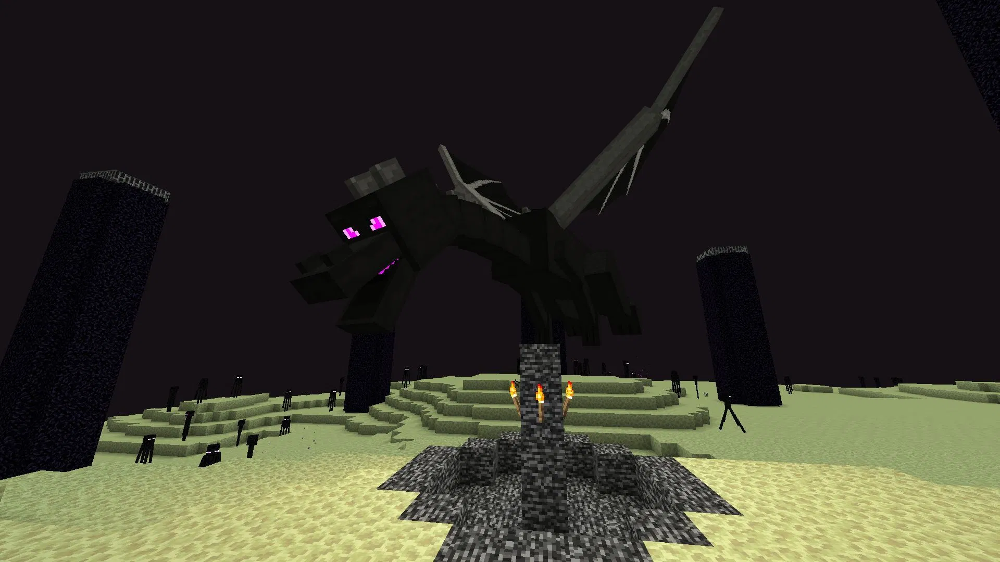
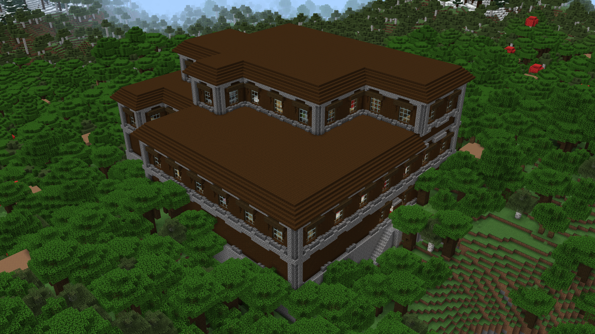
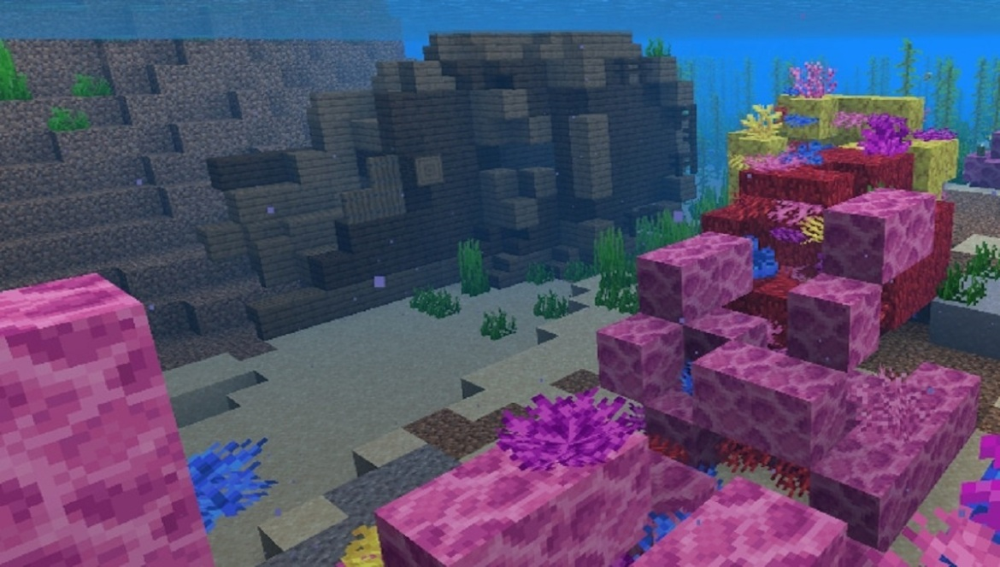
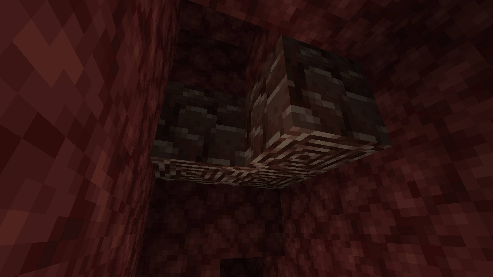
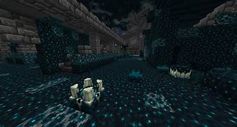

Index
Minecraft est créé le 10 mai 2009 par Notch, de son vrai nom Markus Persson. D'abord développé pour être un jeu sur navigateur Web puis finalement pour ordinateurs à l'aide de Java.
Originellement envisagé comme un projet qui durerait six mois, le jeu que développe Notch fonctionne grâce à une méthode de génération procédurale aléatoire. Dans sa première itération nommée Cave Game, chaque monde de ce qui deviendra plus tard Minecraft ne mesure que 256 blocs de large et 64 blocs de haut.
La première version officielle du jeu sort le 18 novembre 2011
Il s'agit de la première version officielle du jeu, ajoutant un système d'alchimie et d'enchantement ainsi qu'une nouvelle dimension : l'End. Avec cela, l'élevage, le mode Hardcore et de nouveaux blocs et objets sont ajoutés. D'autres fonctionnalités tels que de nouveaux sons, particules, créatures, ou encore un système d'expérience sont incorporées aux jeux.
Le boss de fin de Minecraft
Sortie lors de la période d'Halloween en 2012, cette mise à jour ajoute un nouveau boss, le Wither, ainsi que de nouvelles créatures telles que les sorcières et les zombie-villageois.

Le boss wither de Minecraft
Cette mise à jour ajoute plusieurs éléments de « redstone », permettant de créer usines et mécanismes. C'est comme la revolution industrielle

Un joueur a crée un ordinateur 4 bit en redstone
Cette mise à jour apporte au jeu un nouveau système de combat, le combat contre l'Ender Dragon est modifié, et l'End est étendu avec de nouveaux biomes comportant des cités de l'End gardées par des shulkers et contenant des paires d'élytres. Des nouvelles potions, des nouvelles flèches et des nouveaux enchantements sont également ajoutés. La communauté s'est plaint de la refonte du pvp.
Cette mise à jour ajoute une nouvelles structure, les manoirs, des nouveau mobs comme les vindicateurs et les'évocateurs. Elle rajoute aussi les totems d'immortalités.
Le manoir, la nouvelle structure
Cette mise à jour se concentre sur les océans, ajoutant de nouveaux biomes : les océans chauds, tièdes, froids et gelés ainsi que les récifs coralliens. Une nouvelle faune et flore sous-marine est ajoutée, tels que différents types de poissons, des dauphins, des tortues, des noyés, des algues et des coraux. Des ruines sous-marines et des épaves sont aussi ajoutées. Le phantom, ayant gagné le Mob Vote de la Minecon Earth 2017 est également ajouté. Presonellement le phantom est un mob inutilte
Le biome ocean après la mise à jour 1.13
Cette mise à jour améliore le Nether avec notamment l'ajout de 4 nouveaux biomes : la vallée des âmes, la forêt carmin, la forêt biscornue et les deltas de basalte. Une nouvelle civilisation créée pour Minecraft Legends est ajoutée : les Piglins. Ces derniers vivent dans les ruines de bastion, où se trouvent des Piglins barbares. Les cochons-zombies sont remplacés par les Piglin zombifiés. Les arpenteurs, les hoglins et les zoglins sont également ajoutés. Un nouveau matériau plus puissant que le diamant est aussi ajouté : la Netherite.
Le minerai de netherite
Ces mises à jours sont des refontes des biomes cavernes et falaises. Elles rajoutent la pierre des abîmes, les minerais des abîmes, les géodes d'améthyste, les minerais de cuivre et les variantes correspondantes, les arbres d'azalée, les blocs de mousse, les spéléothèmes pointus, les bougies. Trois créatures font leurs apparition: les axolotls, les chèvres et les poulpes luisant.
Et elles modifient notamment le système de génération de la Surface avec notamment l'ajout de nouvelles montagnes et de nouvelles cavernes. La hauteur du monde maximale est passée de 256 à 320. De nouveaux biomes font leurs apparitions, tels que les prairies, les bosquets, les pentes enneigées, les pics dentelés, gelés et rocheux ainsi que les cavernes luxuriantes et les cavernes de spéléothèmes.
Le biome cave après la mise à jour 1.17 et 1.18
Cette mise à jour ajoute les abîmes, un nouveau biome se trouvant dans les profondeurs de la Surface et lié au Sculk, un nouveau matériau, ainsi que le marais à mangroves. Le bois de palétuvier et la boue sont également ajoutés, ainsi que Les Allays, et les grenouilles.
Le biome de sculk
La dernièr mise à jour de Mincreaft.
Cette mise à jour introduit les Chambres d'épreuve, une structure proposant des combats PvE et donnant accès à des récompenses. Deux nouveaux blocs de redstone sont ajoutés : le fabricateur pour l'artisanat automatique et l'ampoule en cuivre ajustable en luminosité qui peut faire office de bascule. Les nouvelles créatures sont le tatou, l'embourbé (une variante empoisonnée du squelette) et le Breeze, ce dernier se trouvant dans les chambres de épreuves. Une nouvelle arme, la masse, permet d'infliger de lourds dégâts proportionnellement à la hauteur de chute. Des éléments de décoration en tuf et en cuivre sont également ajoutés.
La nouvelle mise a jour 1.21